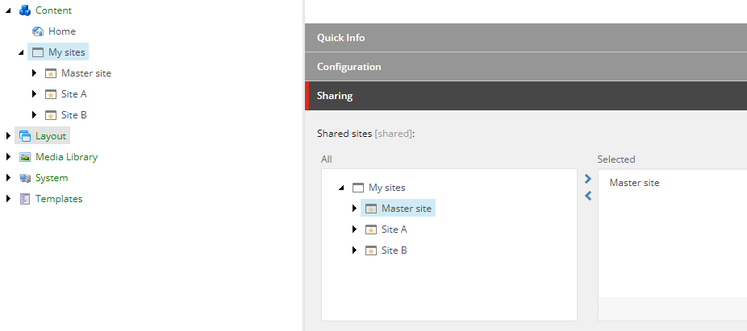
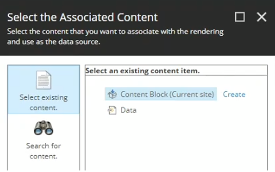

Share content between headless sites
Learn how to share page designs, partial designs, and pages between headless sites.
SXA lets you share data sources, page designs, partial designs, and pages between headless sites within one site collection.
It can be very convenient to arrange the styling of your sites by sharing the presentation of one master site.
To make a headless site a shared site:
In the Content Editor, navigate to the headless site collection, and in the Sharing section use the arrows to move the site that you want to share to the Selected pane.
In this example, the headless Master site is now a shared site. The other sites within the same site collection can now use partial designs, page designs, and data sources from the headless master site.
Adding a shared site implies that you can share page designs, partial designs, and data sources from that site.
To use a page design from a shared site:
In the Experience Editor, navigate to the page that you want to assign a page design to.
Click Pick Page Design, and from the drop-down list click the page design from the shared site.
Similarly, if you want to map page designs to page templates, you can select the master site page designs as well as the page designs you created locally.
You can share data sources between the sites of a site collection. For example, for the Content Block, you can select Content Blocks from both the Master site as well as from your local site.
|  |
The Link rendering lets content authors add links to sites. Links can be internal links, media links, external links, anchors, an email address, and JavaScript. To link within SXA site collections and sites, you must adjust the site settings.
To enable cross-site linking for headless sites:
Set the link root location by navigating to sitecore/Content/<site collection>/<site>/Settings and, in the Site Configuration section, in the Link Settings field, select one of the following options:
Link settings field option
Link root location
Itself only
Default value. The available link root location comes from the current site.
Linkable sites in site collection
All linkable sites within the current site collection.
All linkable
All linkable sites within all site collections.
To make a site linkable, navigate to sitecore/Content/<site collection>/<site>/Settings/Site Grouping/<site>, and in the Basic section, select the Linkable Site check box.
As well as sharing page designs, partial designs, and data sources between sites in the same site collection, you can also share pages. Sharing content as a delegated area lets you control the content from one central location in the content tree.